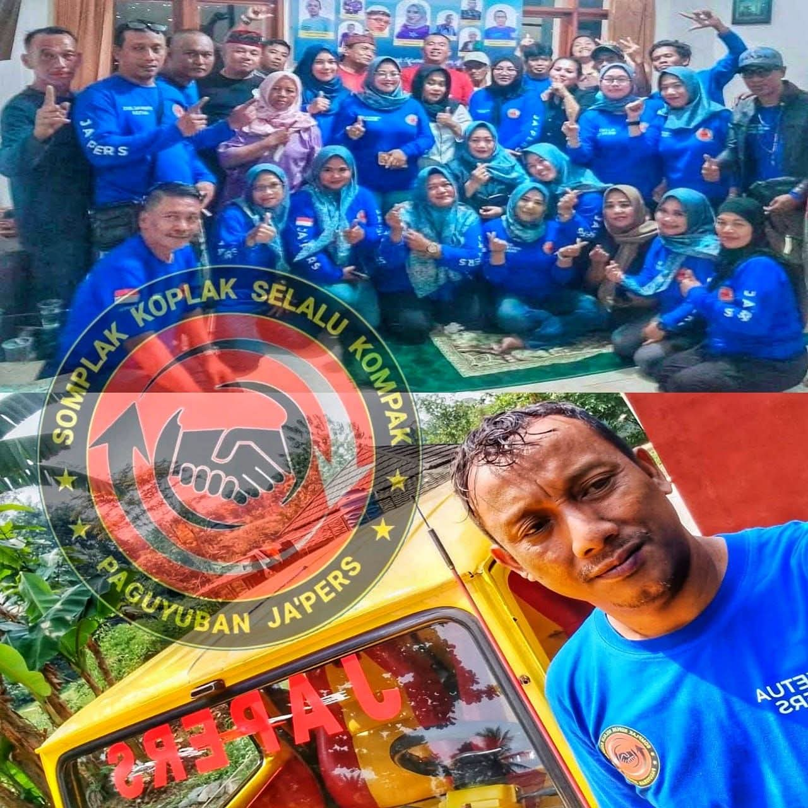

Sorotan Utama
Liputan Pilihan
Konten Video
Video Terbaru
Liputan dan dokumentasi kegiatan terbaru dari Media Ja'pers.


Dokumentasi
Momen Kegiatan

Dokumentasi Media Ja'pers
Momen kebersamaan dan liputan kegiatan yang terdokumentasi oleh tim Media Ja'pers.
Kanal Resmi
Kunjungi Channel YouTube Kami
Ikuti kanal resmi Gapersus TV untuk mendapatkan liputan terbaru, dokumentasi kegiatan, dan konten eksklusif dari Media Ja'pers.
Buka Channel YouTube@gapersus · 861 subscriber · 796 video
Hubungi Kami
Media Ja'pers
Untuk informasi, kerja sama, atau rilis berita, silakan hubungi kami melalui WhatsApp panitia.
Hubungi via WhatsApp